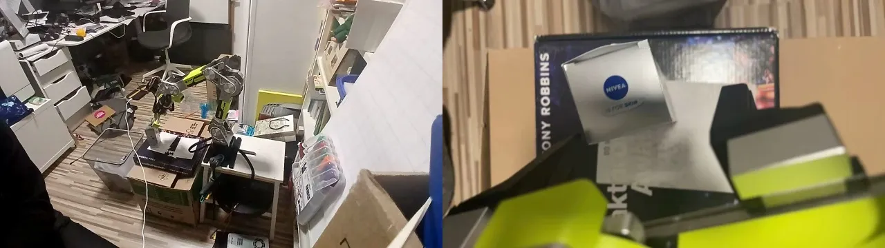
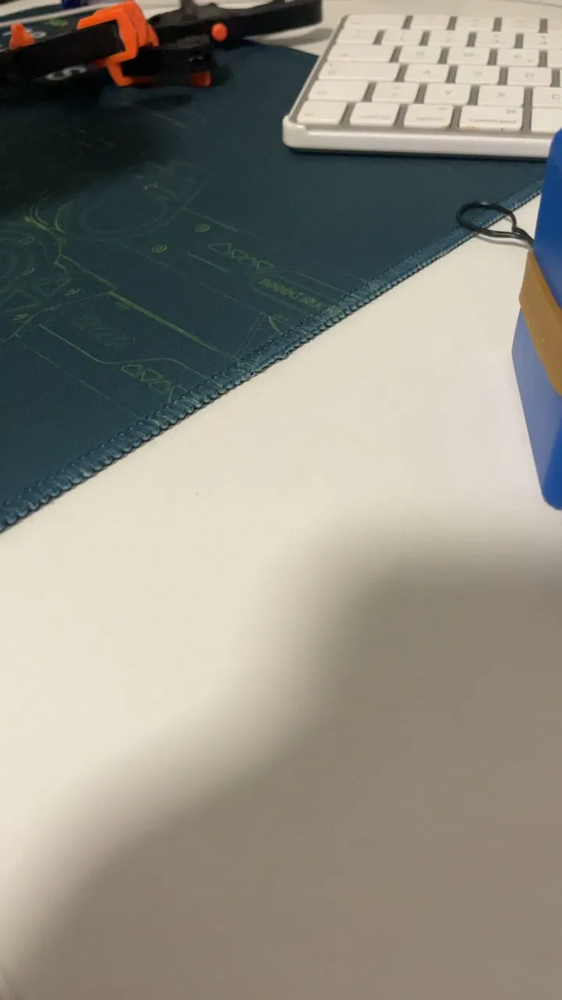

Tag 1 · Sonntag, 15. November 2026
Vom ersten Teleop-Skript zum Kollisionsschutz
Auf dem Mac mini läuft die Teleoperation – und wir lernen, warum ein Roboterarm einen Kollisionsschutz braucht.

Ein Marathon-Sonntag auf dem Mac mini: von der leeren Installation bis zur ersten aufgenommenen Demonstration.
🛠Was wir gemacht haben
- 12:15 Installation (venv, LeRobot 0.7.0, Seeed-Plugin 1.0.5), 12:58 erstes Teleop-Skript mit maximal 5° pro Zyklus, 13:04 erste GUI mit Start/Stopp.
- Greiferstufen („vorsichtig/mittel/kräftig“), ein Preflight-Check (Leader, CAN, alle 7 Motoren) und automatische Leader-Port-Erkennung.
- Ein eigener Kollisionsschutz („Guard“): v1 → v2 mit nachgiebigen Drehgelenken → v3 → v3.1 → v3.2 mit Schwerkraftmodell. Dazu ein Rollback-System mit rund 18 Snapshots.
- Abends zwei Live-Kamerabilder in der GUI, das iPhone als Webcam über eine Browser-Bridge und die ersten Pick-and-place-Demos.

💭Denkweise
Unser Ziel: gelerntes statt programmiertes Steuern verstehen – Arm per Leader führen, Demos aufnehmen, später eine Policy trainieren. Sicherheit kommt zuerst: Der Arm soll nicht gegen Hindernisse oder Menschen weiterdrücken.
Die naheliegende Regel „Tracking-Fehler > 10°“ funktioniert nicht, weil das Ziel pro Zyklus ohnehin auf 5° begrenzt ist. Also erkennt v1 Kontakt über Leader-Abstand und ausbleibenden Fortschritt, später über Drehmoment.
🏆Wins
- Greifer „vorsichtig“ final: kp 10, Schließen max. 1,1 Nm, Halten 1,0 Nm – „funktioniert super“. Davor schloss er nur teilweise (kp 4, 0,8 Nm); mit 1,5 Nm zerquetschten wir Karton.
- Das Stopp-Brummen ist weg: Ein SIGKILL mitten in der Ruhefahrt ließ die Motoren bestromt. Jetzt gibt es ein SIGINT, Kill erst nach 25 s, danach sind alle Motoren drehmomentfrei.
- Guard v2 bestand 40/40 Offline-Tests, v3 74/74.
- Die iPhone-Continuity-Camera ist für OpenCV/LeRobot unsichtbar – die Browser-Bridge ist der Workaround.
💥Fails
- Absturz beim Beenden:
safe_zeroschickte nur Teilmengen der Gelenke, erwartet wurden alle 7 → ValueError. Per Plugin-Patch gefixt. - Greifer-Nullpunkt: Offsets von 13,3° bzw. −38,3° (Encoder-Wraparound nach dem Ausschalten bei offenem Greifer) brachen den Start ab. Jetzt fährt er bei jedem Start zum geschlossenen Anschlag.
- Guard v1 erkannte die Hand nicht: Der Arm schob sie weg (Pan max. 9,8° bei Schwelle 10°). Normale schnelle Bewegung erreichte bis zu 42°/32° Abweichung – der Abstand zwischen „normal“ und „Kontakt“ war zu klein.
- Falsche Freezes bei v3.x. Das Schwerkraftmodell in v3.2 soll helfen; geprüft am echten Arm ist es noch nicht. Wie oft es Fehlalarme gab, haben wir nicht genau erfasst.
📌Learnings
- Ein 5°-Schrittlimit macht den Tracking-Fehler als Kollisionsindikator unbrauchbar. Besser: Drehmoment-Residuum gegenüber einem Schwerkraftmodell.
- Reibung zählt: Bei niedrigem kp bleibt der Greifer vor „zu“ stehen.
- Rollback-Snapshots pro Änderung haben uns mehrfach Zeit gespart.
- Der Not-Aus ist aktuell die schaltbare Steckdosenleiste – ein 48-V-Pilzschalter steht auf der Liste.
🔗Quellen
Seeed-Plugin und Doku zum reBot B601-RS, LeRobot, eigene Session-Logs (Replay), ISO/TS 15066 als Konzeptreferenz für später.
</>Code-Stand
Teleop-App 3.1.1 → 3.2 und Guard v3.2 auf dem Mac mini; alle Guard-Versionen bis v3.2 sind noch nicht am echten Arm validiert.